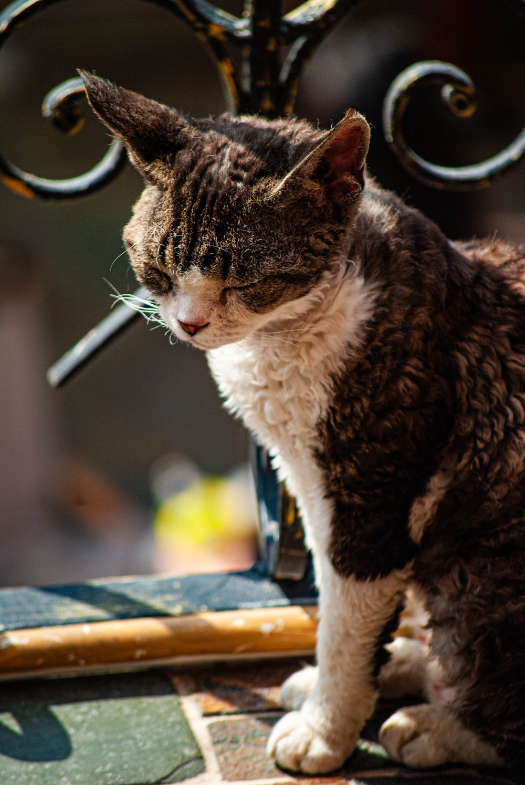
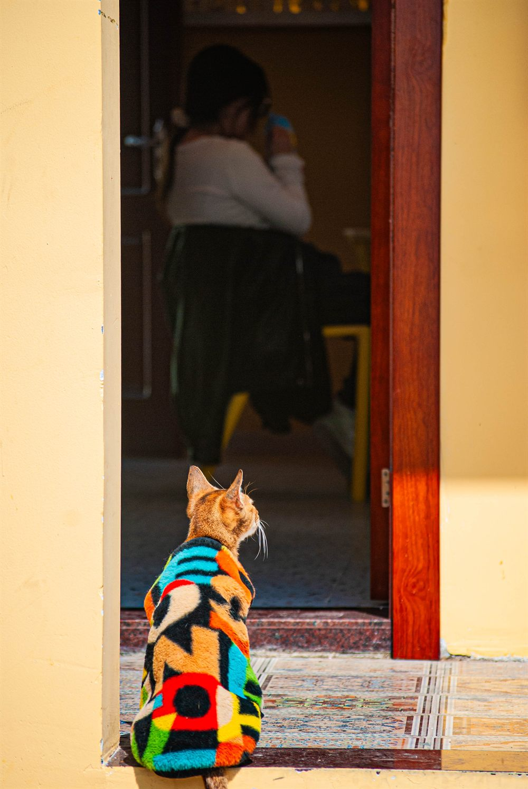
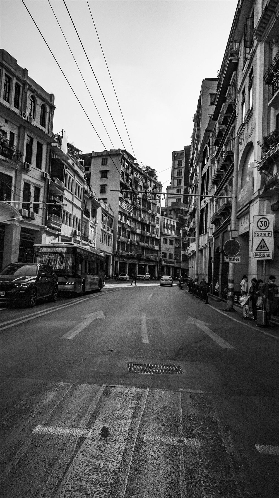
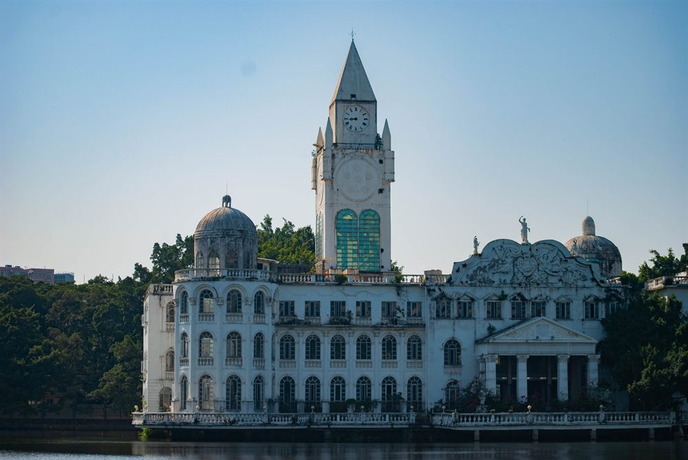

动物猫的世界①
用镜头捕捉猫咪的灵动瞬间，每一帧都是它们独特个性与优雅身姿的完美定格。
用镜头记录世界的美好，每一张照片都是一个故事的开始。

动物用镜头捕捉猫咪的灵动瞬间，每一帧都是它们独特个性与优雅身姿的完美定格。

动物继续探索猫咪的神秘世界，透过镜头感受它们或慵懒、或好奇、或警觉的百变神态。

艺术漫步广州北京路步行街，用镜头记录这座千年商都的市井烟火与现代活力的交织瞬间。

城市广州流花湖公园的白色建筑倒映湖面，宛如水上宫殿，在光影交错中呈现城市与自然的诗意对话。
该分类下暂无作品，看看其他分类吧。
更多作品持续更新中 —— 完整作品集请访问 chendev.cn/photography。